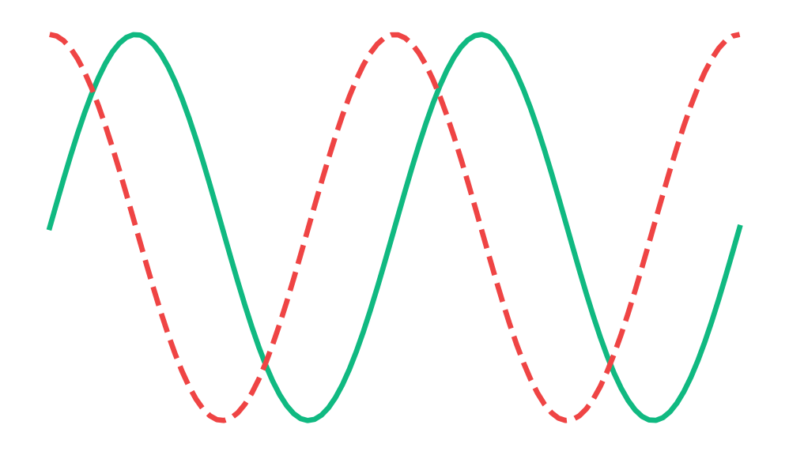
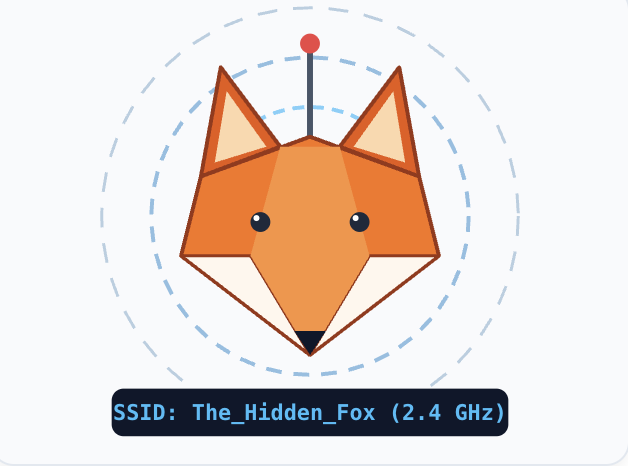
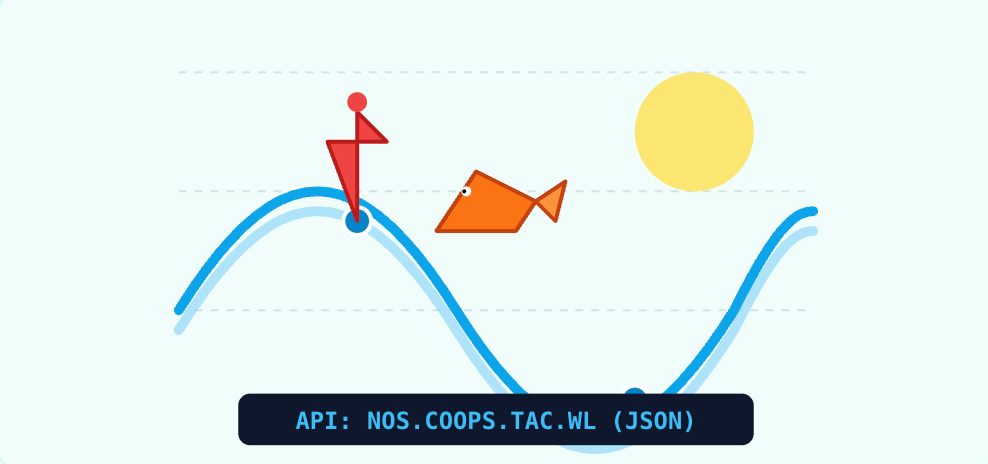
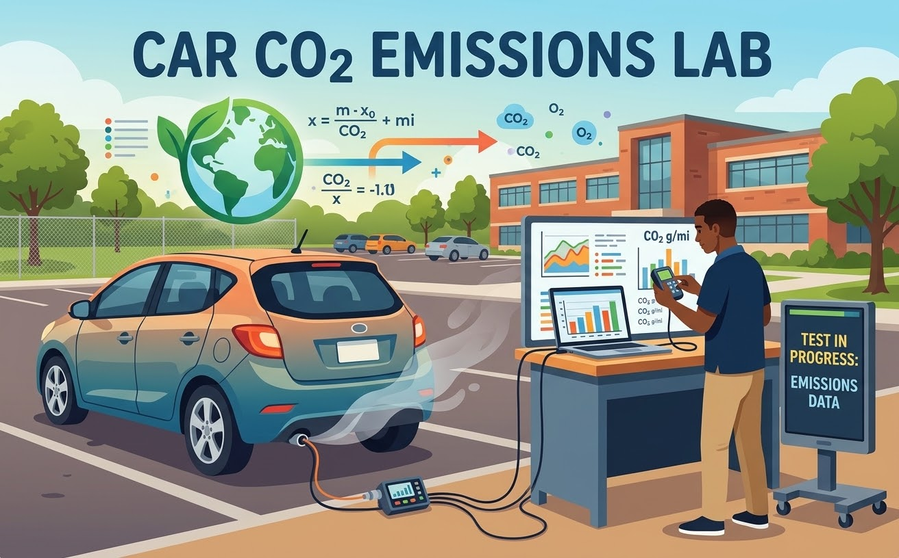
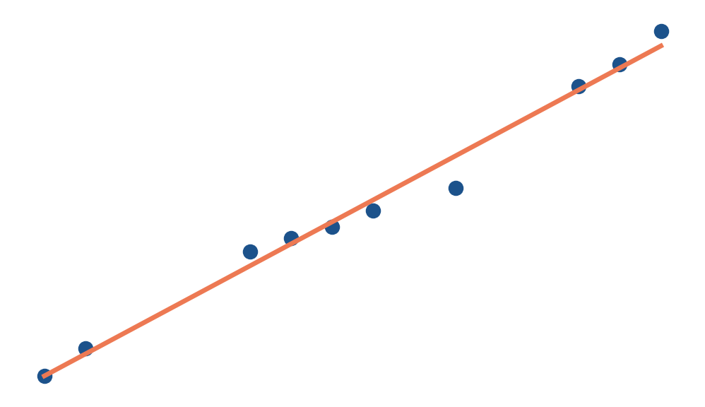
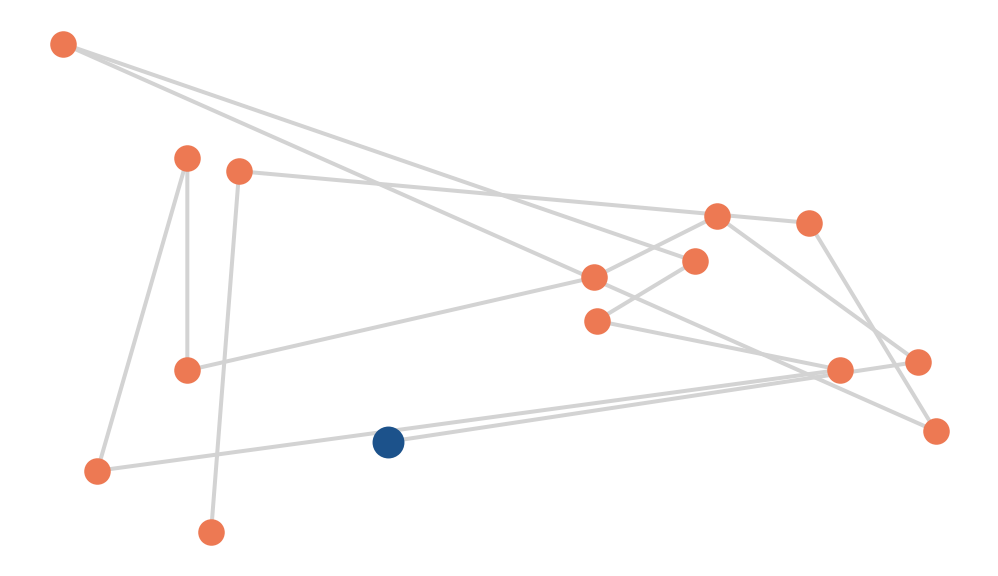
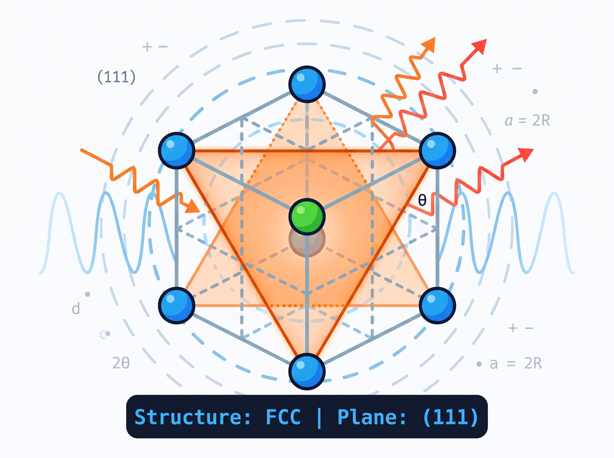
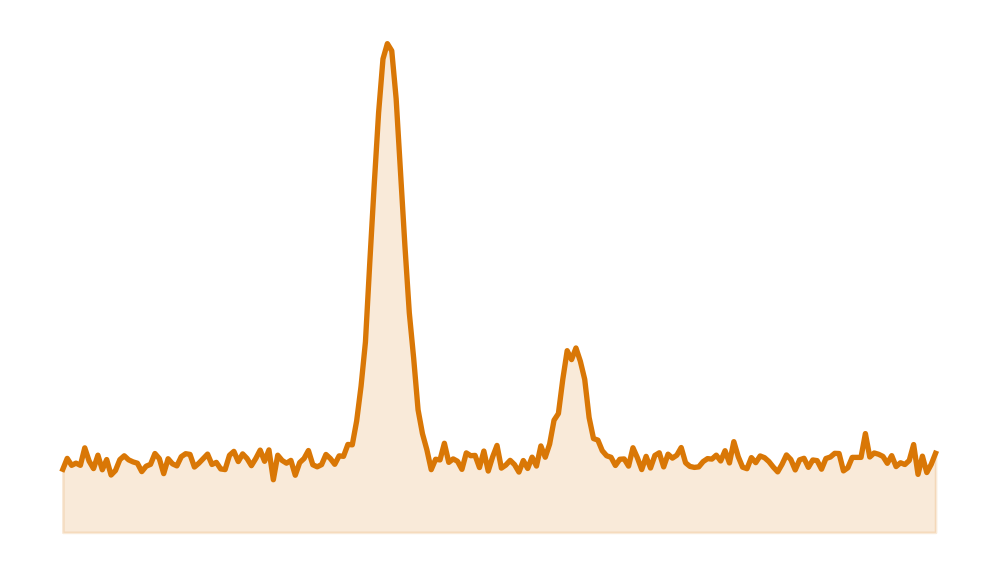

K-12 OUTREACH PROJECTS
Interactive, Hands-On Engineering, Physics, and Data Science Modules
🔬 Tier 1: Foundations & Exploratory STEM
Target Audience: Grades 6–9 (Middle School to Early High School)
Core Concepts: Physical intuition, environmental signals, wave matching, and introductory electronics.

Grades 6–9 | Physics & RF
RF Fox Hunt Lab
Direction finding and wireless physics. Track a Raspberry Pi 5 beacon using a waveguide, filter signal noise, and locate hidden transmitters.

Grades 6–9 | Earth & Data Science
Fishing Tide Predictor
Fetch live NOAA ocean level predictions via API, map local coastal fishing stations interactively, and plot sinusoidal tidal curves.
Grades 6–9 | Interactive Simulation
Resonance Defender
Interactive RLC circuit wave simulator. Defend the power grid by balancing inductive and capacitive reactance to neutralize incoming AC sine waves.
📊 Tier 2: Applied Physics & Data Science
Target Audience: Grades 10–12 (High School STEM, AP Physics, AP Computer Science)
Core Concepts: Python programming, data cleaning, scatter analysis, web automation, and regulatory modeling.

Grades 10–12 | Data Science & Policy
Car CO2 Emissions Lab
Step into the role of an EPA auditor. Ingest cloud vehicle specs, overlay regulatory emissions thresholds, and explore the out-of-distribution EV intercept error.

Grades 10–12 | Applied Mathematics
Linear Regression Modeling
Predict physical characteristics through mathematical optimization. Compute slopes, intercepts, residuals, and lines of best fit using Scikit-Learn.

Grades 10–12 | Data Engineering
API Data Challenge
Pull live demographic data from open government databases using REST APIs. Parse JSON payloads, clean dirty data, and plot regional trends.

Grades 10–12 | Web Robotics
Automating the Web
Introduction to DOM traversal and web automation. Program a Python bot to crawl online directories and bulk-extract files using BeautifulSoup.
🧪 Tier 3: Advanced Materials & Engineering
Target Audience: Grades 11–12, Early College & STEM Competitions
Core Concepts: 3D spatial geometry, crystallography, Miller indices, atomic packing factors, and X-ray diffraction.

Grades 11–College | Materials Science I
Crystal Structures & Miller Planes
Explore unit cells, coordination numbers, and packing factor derivations across SC, BCC, FCC, HCP, and Rock Salt (NaCl). Features an interactive HTML/JS crystal and Bragg’s Law simulator.

Grades 11–College | Materials Science II
Planetary Rover XRD Lab
Put crystal theory to work in a gamified space mission. Filter signal noise, identify unknown minerals using Bragg peak fingerprints, and compute alloy phase ratios with Python.